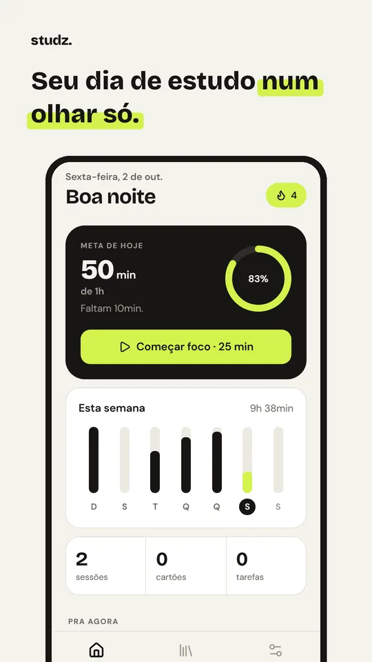
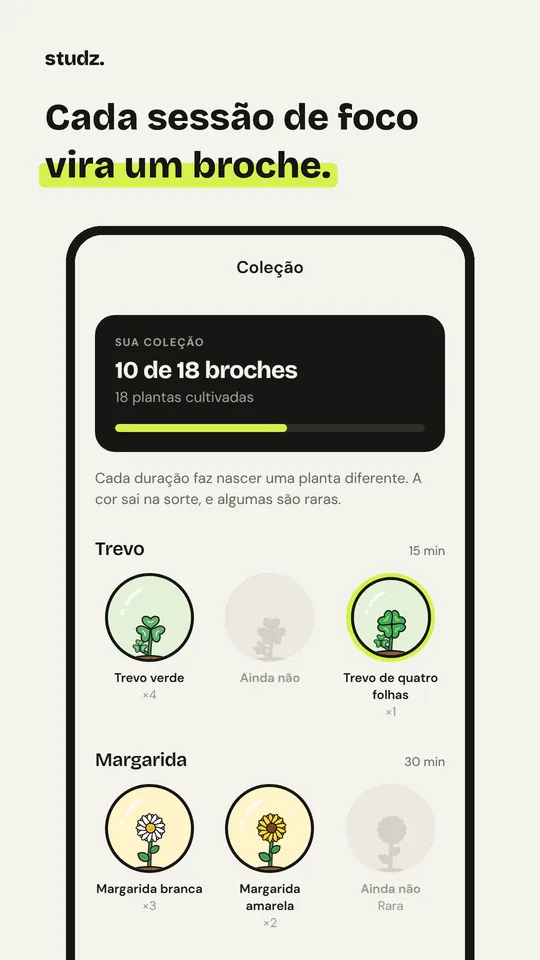
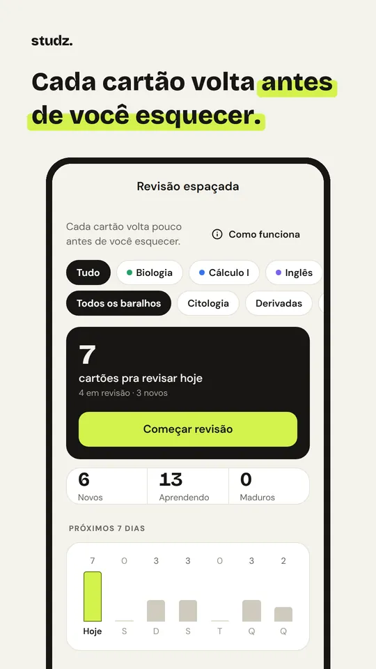
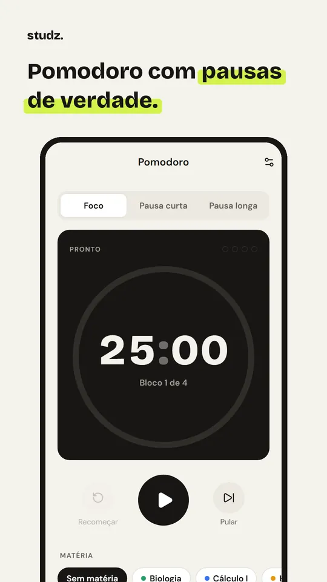
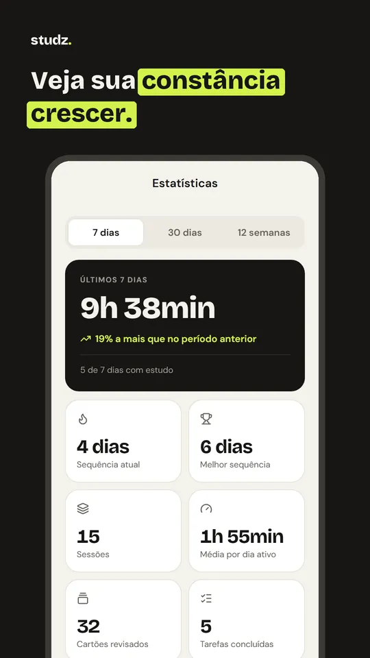
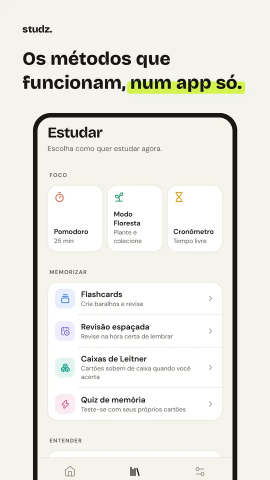

Studz
Studz: Pomodoro e Flashcards · Educação
Foco, flashcards e revisão espaçada. Sem cadastro, tudo no seu celular.
Em breve na Google PlayEstá em teste fechado e chega à loja na segunda quinzena de outubro de 2026.
- Android
- Sem cadastro
- Sem anúncios
- Grátis + Pro







O que ele faz
Pomodoro e cronômetro
Ciclos com pausa curta e longa, ou um cronômetro livre que separa o tempo de estudo das pausas.
Modo Floresta
Cada sessão de foco faz nascer uma planta. Saiu do app, ela seca. As plantas viram broches colecionáveis.
Flashcards com revisão espaçada
Algoritmo SM-2: cada cartão volta pouco antes de você esquecer. Também tem caixas de Leitner e quiz.
Feynman e notas Cornell
Técnica Feynman guiada em 3 etapas e notas Cornell com perguntas-chave e resumo.
Tarefas e meta diária
Tarefas com prazo e matéria, sequência de dias e lembrete no horário que você escolher.
Estatísticas
Gráfico, mapa de calor e tempo por matéria pra ver onde seu estudo está indo.
Quanto custa
Pomodoro, cronômetro, flashcards e tarefas são grátis pra sempre. O Studz Pro libera as outras ferramentas e pode ser mensal, anual (com 7 dias grátis) ou vitalício, com um pagamento só.
Seus dados
Matérias, baralhos, anotações e sessões de estudo ficam salvos só no seu celular. Pra saber se você tem o Pro, o app usa um identificador anônimo, sem nome nem e-mail.